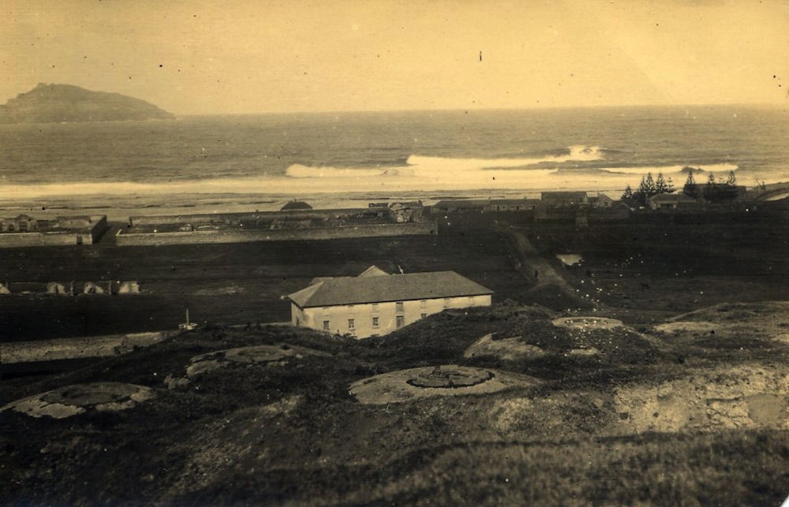
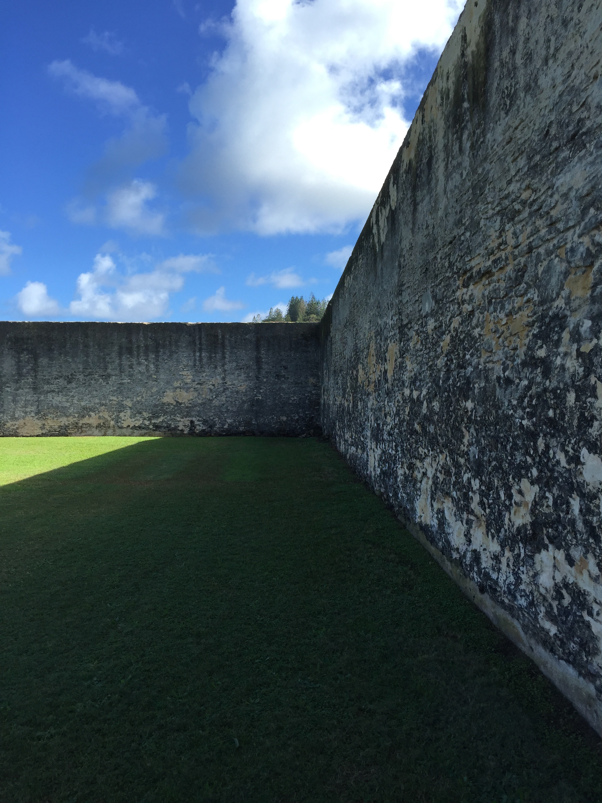

The Kingston and Arthurs vale Historic Area (KAvHA) is of outstanding significance to the nation as a convict settlement spanning the era of transportation to eastern Australia between 1788 and 1855. Europeans were not the first people to inhabit Norfolk island. Stone tools found at both Emily and Slaughter Bays within KAvHA indicate that Polynesian settlement of the area occurred between AD 1200 and AD 1600. Visited by Captain James Cook RN in 1774, Norfolk island was settled on 6 March 1788, six weeks after the First Fleet landed in Sydney. A settlement was established at Kingston, with crops sown in the adjoining valley, Arthurs vale. To relieve the food pressures in the infant colony of New South Wales, Governor Philip relocated around one-third of Sydney’s population to Kingston.
The old gaol Kingston, Norfolk Island (above)
First settlement
During the first years of the First Settlement convicts lived in small wooden huts along the seafront and flatlands but later a gaol was needed to house wrongdoers. A stone gaol was built near the shore and is known as The Old Gaol. It was destroyed before the First Settlement was abandoned in 1814.

Goal from a hill perspective (above)
Second settlement
It was built during the Second Settlement to give improved conditions for landing things on the island. It's curved shape was designed to reduce the strength of the waves. As waves hit the pier, they are reflected off at 90 degrees, losing much of their energy.

Gaol wall (above)
Third settlement
The Pitcairners did not use the gaol as they did not need it. They dismantled parts of it to recycle the stone for use in other buildings.